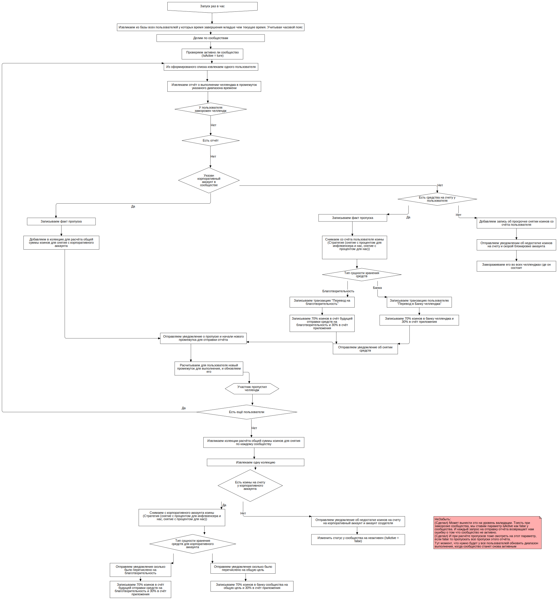

Обработка пропусков челленджа F
FCFlowchart
TAction
::
Use Cases
::
Diagrams
::
PUC: Челленджи
::
Обработка пропусков челленджа
::
Обработка пропусков челленджа F
Description
none
Diagrams

Обработка пропусков челленджа FD
Properties
Name
Value
name
Обработка пропусков челленджа F
Owned Elements
Обработка пропусков челленджа FD
Запуск раз в час
Извликаем из базы всех пользователей у которых время завершения младше чем текущее время. Учитывая часовой пояс
Из сформированого списка извлекаем одного пользователя
Извлекаем отчёт о выполнении челленджа в промежуток указаного диапазона времени
Есть отчёт
Указан корпоративный аккаунт в сообществе
Снимаем со счёта пользователя коины (Стратегия (снятие с процентом для инфлюенсера и нас, снятие с процентом для нас))
Тип сущности хранения средств
Записываем транзакцию пользователю "Перевод в Банку челленджа"
Записываем транзакцию "Перевод на благотворительность"
Записываем 70% коинов в банку челленджа и 30% в счёт приложения
Записываем 70% коинов в счёт будущей отправки средств на благотворительность и 30% в счёт приложения
Есть средства на счету у пользователя
Отправляем уведомление об снятии средств
Добавляем запись об просрочке снятии коинов со счёта пользователя
Отправляем уведомлении об недостатке коинов на счету и скорой блокировке аккаунта
Замораживаем его во всех челленджах где он состоит
Есть коины на счету у корпоративного аккаунта
Снимаем с корпоративного аккаунта коины (Стратегия (снятие с процентом для инфлюенсера и нас, снятие с процентом для нас))
Тип сущности хранения средств для корпоративного аккаунта
Отправяем уведомления сколько было перечислено на благотворительность
Отправяем уведомления сколько было перечислено на общую цель
Записываем факт пропуска
Записываем факт пропуска
Добавляем в колекцию для расчёта общей суммы коинов для снятия с корпоративного аккаунта
У пользователя заморожен челлендж
Отправляем уведомление о пропуске и начали нового промежутка для отправки отчёта
Делим по сообществам
Есть ещё пользователи
Извликаем колекции расчёта общей суммы коинов для снятия по каждому сообществу
Записываем 70% коинов в счёт будущей отправки средств на благотворительность и 30% в счёт приложения
Извлекаем одну колекцию
Записываем 70% коинов в банку сообщества на общую цель и 30% в счёт приложения
Отправляем уведомление об недостатке коинов на счету на корпоративный аккаунт и аккаунт создателя
Расчитываем для пользователя новый промежуток для выполнения, и обновляем его
Проверяем активно ли сообщество (IsActive = ture)
Изменить статус у сообщества на неактивен (IsActive = false)